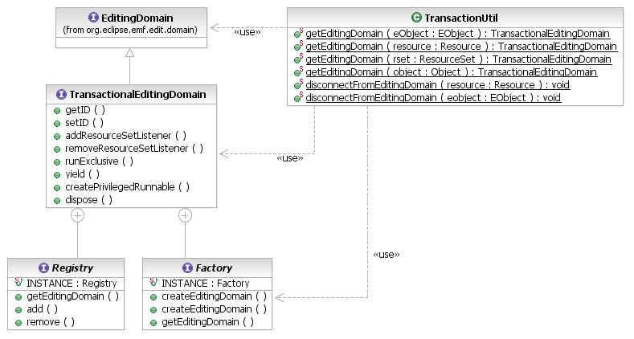

Transactional editing domains are specialized EditingDomains that add transaction semantics to editing operations, in order to promote data integrity. This consists of two primary controls: ResourceSet locking for coordination of concurrent threads and automatic rollback of changes in case of violations of data integrity.
TransactionalEditingDomains may be created by an application at run-time, using the static Factory instance. The factory can optionally create an editing domain on a ResourceSet provided by the client, or it can create a default resource set. In either case, the ResourceSet is thenceforward managed by transactions.

[as SVG]
ResourceSet rset = getResourceSet(); // access some hypothetical resource set
TransactionalEditingDomain domain = TransactionalEditingDomain.Factory.INSTANCE
.createEditingDomain(rset);
// begin working with the editing domain
We saw above how transactional editing domains can be created at run-time. This is good for applications that only need their own editing domain to edit their own EMF resources. However, what if an application or a plug-in wants to share its editing domain with other applications, so that they may cooperatively edit a common set of resources? The TransactionalEditingDomain.Registry provides the means by which an application can publish its editing domain under a unique identifier for other to find and work with. The static TransactionalEditingDomain.Registry instance is the most appropriate registry in which to do this:
TransactionalEditingDomain.Registry.INSTANCE.add("org.eclipse.example.MyDomain", domain);
Then, another application or editor can use this ID to look up the editing domain instance:
TransactionalEditingDomain shared = TransactionalEditingDomain.Registry.INSTANCE.getEditingDomain(
"org.eclipse.example.MyDomain");
// begin working with the editing domain
This now raises a problem that is fairly common with registries of shared objects in Eclipse: what if the application that retrieves this editing domain from the registry needs to use it before the provider of the domain has registered it? Or even before the provider has been activated? The EMF Transaction API provides the org.eclipse.emf.transaction.editingDomains extension point on which to statically register an editing domain. Whenever any client application (and this includes the one that registers the domain) wishes to access the registered editing domain, it simply retrieves it from the registry by ID. On the first such access, the registry creates the editing domain using the factory implementation referenced on the extension point. If no factory is specified, then the default static instance is used:
<extension point="org.eclipse.emf.transaction.editingDomains">
<domain id="org.eclipse.example.MyDomain"
factory="org.eclipse.example.MyCustomFactory"/>
</extension>
// the factory implementation
public class MyCustomFactory extends TransactionalEditingDomainImpl.FactoryImpl {
public TransactionalEditingDomain createEditingDomain() {
TransactionalEditingDomain result = super.createEditingDomain();
// customize my editing domain in some way
// ...
return result;
}
}
The registry will invoke the zero-argument factory method to create the editing domain. The recommended way to create an editing domain factory is to extend the default implementation, as above, and to delegate the actual domain instantiation to the superclass. Otherwise, it is necessary to invoke the FactoryImpl.mapResourceSet() method to ensure that the traceability between the ResourceSet and the editing domain is established.
It will often happen that a client of the EMF Transaction API knows that an object or a resource is in a transactional editing domain (perhaps because it requires this), but not which editing domain. The TransactionUtil class provides utility methods that obtain the editing domain that manages an EObject, a Resource, or a ResourceSet.
EObject subject = getSubject(); // some object to operate on
TransactionalEditingDomain domain = TransactionUtil.getEditingDomain(subject);
if (domain != null) {
// do something with the subject in a transaction
}
An application that is working with multiple resource sets, some in transactional editing domains and others not, may occasionally find that it needs to move objects and/or resources from a non-transactional resource set to a transactional resource set or vice-versa. When a resource or an object comes into a transactional context, it because subject to that transactional editing domain and will continue to be even after it is removed from that context. Even after it is moved into an otherwise non-transactional resource set, it will continue to be managed by the editing domain that formerly contained it.
The TransactionUtil class provides static utilities that will dissociate an object or a resource from a transactional editing domain that had managed it. After removing an object or a resource from its container, the disconnectFromEditingDomain() method breaks its ties to the editing domain. It is then free to be added to another transactional editing domain or to a non-transactional resource set.
If the object or resource is not disconnected from its former transactional editing domain when it is added to another transactional editing domain's resource set, then it will be subject to both editing domains. Such an object can only safely be accessed in simultaneous transactions on both editing domains. In practice, this is not feasible.
Resource resource = getResource(); // a resource to move to another resource set
TransactionalEditingDomain formerDomain = TransactionUtil.getEditingDomain(resource);
ResourceSet newResourceSet = getNewResourceSet(); // resource set to move to
newResourceSet.getResources().add(resource); // first, move the resource
if (domain != null) {
// then disconnect it from the former editing domain
TransactionUtil.disconnectFromEditingDomain(resource);
}
When an application has finished with an editing domain, or has finished with transactional editing of the contents of a resource set, the editing domain can be deactivated by calling the dispose() method.
domain.dispose();
A registered editing domain is first removed when the registry when it is disposed. In the case that the editing domain is statically registered on the extension point, however, it cannot be unregistered and, hence, cannot be disposed.